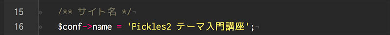

<h2>サイトマップからページ名を出力するにはレイアウトのソースの中にある＜title＞＜/title＞タグの間に以下のようなPHPを挿入する必要があります。</h2><h2><div class="sourceview">
<pre class="brush: html;">
&lt;title&gt;&lt;?= htmlspecialchars($px-&gt;site()-&gt;get_current_page_info(<font color="#d14">&#039;title_full&#039;</font>)); ?&gt;&lt;/title&gt;
</pre>
</div></h2><h2 id="-html-htmlspecialchars-">タイトルにはHTMLの特殊文字が含まれている可能性があるため「htmlspecialchars()」を通してエスケープします。</h2>
<h2 id="-font-color-d14-font-font-color-d14-title_full-font-title_full-font-color-d14-title-font-title-"><font color="#d14">赤文字</font>の部分を上記のように「<font color="#d14">&#39;title_full&#39;</font>」にした場合はサイトマップのＫ列にある「title_fullカラム」から「ページ名｜サイト名」の形で出力され、「<font color="#d14">&#39;title&#39;</font>」にした場合はサイトマップのＢ〜Ｇ列にある「titleカラム」から「ページ名」のみの形で出力されるようになります。</h2>
<h2 id="-title_full-config-php-16-">「title_fullカラム」に何も設定されていない場合は上記「config.php」の16行目にある「サイト名」が出力されますので覚えておくと良いでしょう。次のチャプターではメタタグを出力する方法について詳しく見ていきましょう。</h2>
